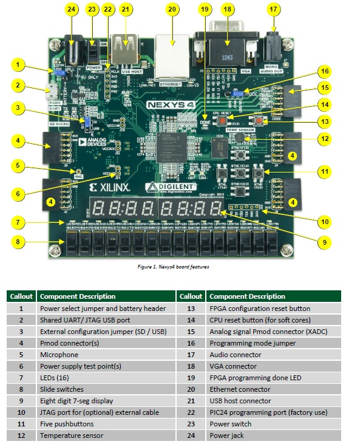

EEE6225 Systems Design
Digilent Nexys-4 Board
Xilinx Artix-7 FPGA
- FPGA part number XC7A100T-1CSG324C
- 15,850 logic slices, each with four 6-input LUTs and 8 flip-flops
- 4,860 Kbits of fast block RAM
- Six clock management tiles, each with phase-locked loop (PLL)
- 240 DSP slices
- Internal clock speeds exceeding 450MHz
- On-chip analog-to-digital converter (XADC)
- 16 user switches
- USB-UART Bridge
- 2-bit VGA output
- 3-axis accelerometer
- 16Mbyte CellularRAM
- Pmod for XADC signals
- 16 user LEDs
- Two tri-color LEDs
- PWM audio output
- Temperature sensor
- Serial Flash
- Digilent USB-JTAG port for FPGA programming and communication